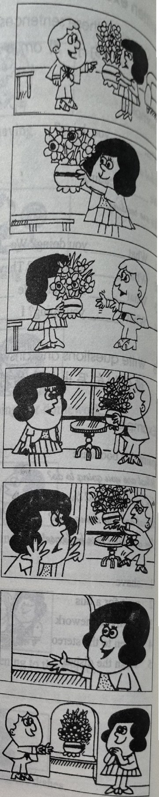
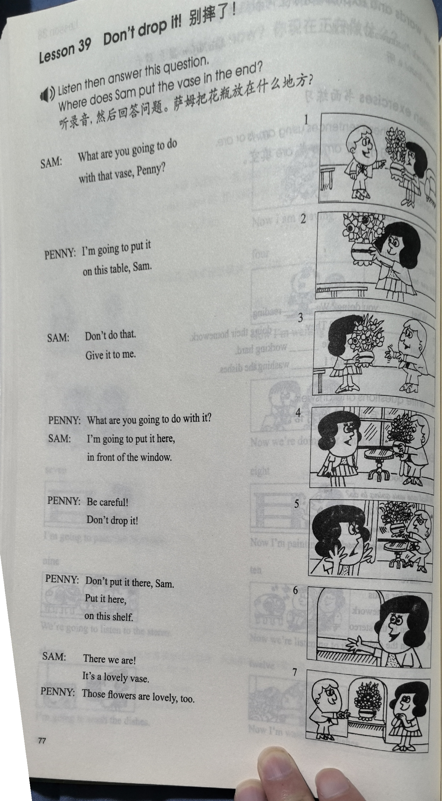
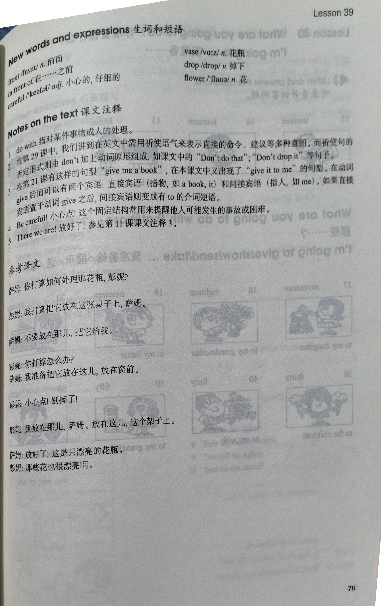

Lesson content · 课文
Lesson 39: Don't drop it! · 别摔了！
Listen then answer this question. 听录音，然后回答问题。
Where does Sam put the vase in the end?
萨姆把花瓶放在什么地方？
SAM: What are you going to do with that vase, Penny?
PENNY: I’m going to put it on this table, Sam.
SAM: Don’t do that. Give it to me.
PENNY: What are you going to do with it?
SAM: I’m going to put it here, in front of the window.
PENNY: Be careful! Don’t drop it!
PENNY: Don’t put it there, Sam. Put it here, on this shelf.
SAM: There we are! It’s a lovely vase.
PENNY: Those flowers are lovely, too.

New words and expressions · 生词和短语
| Word · 单词 | Pronunciation · 音标 | Meaning · 词义 |
|---|---|---|
| front | /frʌnt/ | n. 前面 |
| in front of | /ɪn frʌnt əv/ | 在……之前 |
| careful | /ˈkeəfəl/ | adj. 小心的，仔细的 |
| vase | /vɑːz/ | n. 花瓶 |
| drop | /drɒp/ | v. 掉下 |
| flower | /ˈflaʊə/ | n. 花 |
Notes on the text · 课文注释
- do with 指对某件事物或人的处理。
- 在第29课中，我们讲到在英文中需用祈使语气来表示直接的命令、建议等多种意图。而祈使句的否定形式则由 don’t 加上动词原形组成，如课文中的“Don’t do that”，“Don’t drop it”等句子。
- 在第21课有这样的句型“give me a book”，在本课文中又出现了“give it to me”的句型。在动词 give 后面可以有两个宾语：直接宾语（指物，如 a book，it）和间接宾语（指人，如 me）。如果直接宾语置于动词 give 之后，间接宾语则变成由 to 引导的介词短语。
- Be careful! 小心点！这个固定结构常用来提醒他人可能发生的事故或困难。
- There we are! 放好了！参见第11课课文注释3。
Chinese translation · 参考译文
萨姆：你打算如何处理那花瓶，彭妮？
彭妮：我打算把它放在这张桌子上，萨姆。
萨姆：不要放在那儿，把它给我。
彭妮：你打算怎么办？
萨姆：我准备把它放在这儿，放在窗前。
彭妮：小心点！别摔了！
彭妮：别放在那儿，萨姆。放在这儿，这个架子上。
萨姆：放好了！这是只漂亮的花瓶。
彭妮：那些花也很漂亮啊。
Practice · 课文练习
Understand the lesson · 课文理解
Comprehension · 理解题
Answer the question about the lesson text. 根据课文回答问题。
-
comprehension: Comprehension · 理解题 — Where does Sam put the vase in the end?
Practice worksheet · 配套练习
A. Dialogue
Read this dialogue. Fill in the missing words. 填空。
-
worksheet: A. Dialogue — Sam: What ____ you ____ to do ____ that vase, Penny?
Penny: I’m ____ to put it on this ____, Sam.
Sam: ____ do that. Give it ____ me.
Penny: What ____ you ____ to ____ with it, Sam?
Sam: I’m ____ to put it ____, in ____ of the window.
Penny: Be ____! Please don’t ____ it! Don’t ____ it there, Sam. Put it here, on this ____.
Sam: There ____ are! It’s a lovely ____.
Penny: Yes, and the ____ are ____, too.
B. Vocabulary
Match the verbs and nouns, then write ten sentences beginning with Don’t. 选用恰当的动词和名词，组成10个用 Don’t 开头的句子。
Verbs: put on · take off · turn on · turn off · drop · eat · drink · sharpen · paint · make
Nouns: the television · the vase · the wardrobe · those pencils · your shoes · the lights · the beds · your coat · the milk · that apple
Example · 例句
Don’t put on your shoes.
-
worksheet: B. Vocabulary — your coat
-
worksheet: B. Vocabulary — the television
-
worksheet: B. Vocabulary — the lights
-
worksheet: B. Vocabulary — the vase
-
worksheet: B. Vocabulary — that apple
-
worksheet: B. Vocabulary — the milk
-
worksheet: B. Vocabulary — those pencils
-
worksheet: B. Vocabulary — the wardrobe
-
worksheet: B. Vocabulary — the beds
C. Numbers
Write the answers in words. 用英语数词写出以下算式的答案。
Example · 例句
seven + five = twelve
-
worksheet: C. Numbers — sixteen − seven
-
worksheet: C. Numbers — ten × four
-
worksheet: C. Numbers — nine + six
-
worksheet: C. Numbers — nine × two
-
worksheet: C. Numbers — thirteen + seven
Original images · 原图对照
Expand a page to compare it with the transcription. Open the original in a new tab to zoom in.
展开原图核对文字，也可以在新标签页打开原图放大查看。
Lesson text and oral practice · 课文与口头练习
Open original · 打开原图 ↗ Download original · 下载原图


Vocabulary, notes and written exercises · 生词、注释与书面练习
Open original · 打开原图 ↗ Download original · 下载原图



Grammar practice · 语法练习
I. Write the imperative sentences according to the examples
1.
- a. Use a pen, not a pencil.
Use a pen, please. Don't use a pencil.
- b. Open the window, not the door.
- c. Walk along the road, not across the road.
- d. Paint it green, not yellow.
- e. Sit on my right, not on my left.
- f. Wash your shirts, not your trousers.
- g. Give it to Tim, not Tom.
- h. Show him your passports, not your plane tickets.
- i. Speak English, not Chinese.
- j. Put it here, not there.
2.
- a. dishes/on shelf/in cupboard
Don't put the dishes on the shelf.
Put them in the cupboard.
- b. your shoes/near bed/near door
- c. your book/on dressing table/on desk
- d. that rug/on chair/on floor
- e. television/in the middle of the room/in corner
- f. lamp/near bed/on desk
- g. bottles/on floor/in cupboard
- h. your clothes/on bed/in wardrobe
- i. butter/on the refrigerator/in the refrigerator
- j. newspapers/on television/on shelf
II. Make sentences, using the cues given according to the examples
- 1. he/put away/ties
He's putting away his ties.
He's putting his ties away.
He's putting them away.
- 2. my son/put on/his trousers
- 3. we/write down/our names
- 4. she/take off/her hat
- 5. John/turn on/the stereo
- 6. my mother/turn off/the cooker
- 7. they/throw away/the dirty bottles
- 8. I/put on/my watch
Your notes and answers
Use this space for longer responses or exercises that do not have an individual answer box.